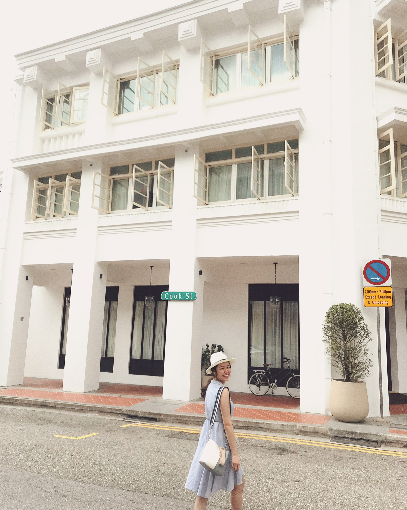

About Cindy
自我介紹
-- 大家好我是Cindy，很高興參與這次的培訓，也發現原來程式語言可以這麼有趣。
我在小組裡扮演的角色
-- 整理小組討論資訊的小小後援部隊。
心得
整個過程中一直都很期待每次的上課，心想著不知道今天又會學到什麼新知識，也因為從沒有過程式基礎，學習起來雖然有時會遇到撞期，不過也更覺得求知慾望大爆發，謝謝Women Who Code Taipei舉辦這麼棒的活動！
活動照片